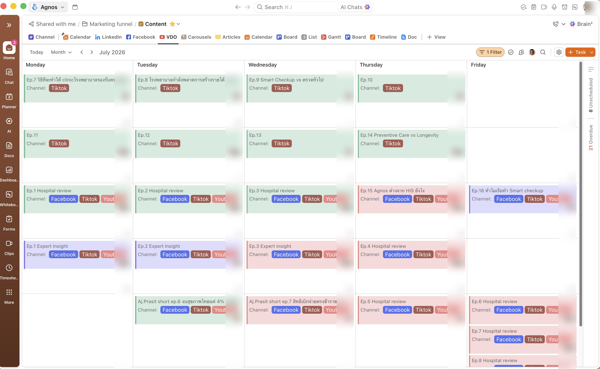

04 / 04
จากคนลงมือทำ
สู่ผู้ออกแบบระบบและผู้นำทีม
Agnos Health · Brand & Channel Systems · Team Leadership
สร้างระบบปฏิบัติการด้านการตลาด (Marketing Operating System) ที่มาตรฐานทั้งการวางแผน การผลิต และการรีวิวผลลัพธ์ ทำให้ทีมขนาดเล็กทำงานได้อย่างสม่ำเสมอในทุกช่องทาง พร้อมสนับสนุนการทำงานร่วมกันข้ามทีมกับ CEO, Sales และ Product

ClickUp content calendar — ระบบวางแผน content รายเดือนที่ทีมใช้จริง (เบลอข้อมูลส่วนบุคคล)
RoleMarketing Operations · Brand Systems · Team Leadership
ขอบเขตBrand Governance · Cross-functional Operations · Team Management
ช่วงเวลา2022 → ปัจจุบัน
บทบาทและความเป็นเจ้าของงาน
- ออกแบบระบบปฏิบัติการด้านการตลาด (Marketing Operating System) ที่มาตรฐานทั้งการวางแผน การผลิต และ Brand Governance ทั่วทั้งองค์กร
- นำทีมและโค้ชทีมงานขนาดเล็ก (in-house & freelance) พร้อมประสานงานข้ามทีมกับ CEO, Marketing, Sales และ Product
- สร้าง Workflow ที่ทำซ้ำได้ มาตรฐานคุณภาพงาน และการรีวิวผลลัพธ์รายเดือน ที่ทำให้ทีมทำงานได้อย่างสม่ำเสมอโดยไม่ต้องพึ่งพาคนใดคนหนึ่ง
โจทย์
ช่วงแรกของสตาร์ทอัพ ฉันลงมือทำคอนเทนต์เกือบทุกชิ้นด้วยตัวเอง แต่เมื่อบริษัทเติบโตขึ้น ช่องทางขยายตัวมากขึ้น
ลำดับความสำคัญซับซ้อนขึ้น และทีมงานขยายตัวตามไปด้วย วิธีการเดิมจึงหยุดการสเกล หากไม่มีระบบร่วมกัน
คอนเทนต์เริ่มประสานงานได้ยากขึ้น คุณภาพงานไม่สม่ำเสมอ และทีมที่กำลังเติบโตก็เริ่มเดินไปคนละทิศทาง
แนวทาง
ฉันเปลี่ยนบทบาทจาก Content Creator สู่การเป็น Marketing Systems Designer — สร้างกรอบการทำงาน (Framework), Workflow และกระบวนการทำงาน (Operating Processes) ที่ทำซ้ำได้ ทำให้ทีมขนาดเล็กวางแผน ผลิต รีวิว และพัฒนางานได้อย่างสม่ำเสมอ
เหตุผลเบื้องหลัง: การสื่อสารองค์กรระดับ HealthTech จะอาศัยความฟลุกในการคิดคอนเทนต์รายวันไม่ได้ ทีมต้องการ "เข็มทิศเชิงกลยุทธ์ (Strategic Guardrails)"
เพื่อให้รู้ว่าควรสร้างอะไรและสร้างไปเพื่ออะไร การมีระบบที่ดี (เช่น Content Pillars, Repeatable Series และ Workflow ที่ชัดเจน)
จะช่วยปลดล็อกศักยภาพของทีม ป้องกัน Burnout และทำให้แบรนด์มีมาตรฐานความน่าเชื่อถือสูงอย่างสม่ำเสมอ
สิ่งที่สร้างขึ้น
01 Brand Governance & Content Framework
ออกแบบกรอบคอนเทนต์แบบ 5-Pillar และระบบ Brand Governance ที่เชื่อมทุกชิ้นงานสื่อสารเข้ากับเป้าหมายธุรกิจที่ชัดเจน กรอบนี้ทำให้ทีม in-house และฟรีแลนซ์เห็นทิศทางเดียวกัน พร้อมรักษา Brand Voice ให้สม่ำเสมอในทุกช่องทาง
02 Repeatable Content System
สร้างรูปแบบคอนเทนต์ที่ทำซ้ำได้ Blueprint การผลิต และคลังคำถามสัมภาษณ์ ที่ทำให้ทีมผลิตงานคุณภาพสูงได้เร็วขึ้น โดยไม่ต้องเริ่มนับหนึ่งใหม่ทุกครั้ง
03 Marketing Operations
ออกแบบ Workflow การตลาดแบบ end-to-end บน ClickUp — ตั้งแต่การวางแผน มอบหมายงาน ติดตามสถานะ ไปจนถึงรีวิวงานผลิต — สร้างระบบที่โปร่งใส ช่วยให้ทีมประสานงานกันได้ดีขึ้น และเห็นภาพรวมลำดับความสำคัญและความคืบหน้าร่วมกัน
04 Cross-functional Leadership
นำทีมขนาดเล็ก (in-house & freelance) พร้อมประสานการทำงานร่วมกับ CEO และข้ามทีม Marketing, Sales และ Product — จัดลำดับความสำคัญ ไทม์ไลน์ และการสื่อสารให้ตรงกันตลอดทั้งโปรเจกต์
05 Planning & Performance Management
วางแผนรายเดือนและรายปีเป็นระบบ รีวิวผลลัพธ์ร่วมกับ CEO อย่างสม่ำเสมอ และปรับลำดับความสำคัญตามข้อมูลจริงต่อเนื่อง — เปลี่ยนการรีวิวผลลัพธ์ให้กลายเป็นกระบวนการตัดสินใจ ไม่ใช่แค่การรายงานผล
ผลลัพธ์เชิงปฏิบัติการ
- ทีมทั้งหมดใช้ระบบปฏิบัติการด้านการตลาดเดียวกันร่วมกัน
- การวางแผนรายเดือนอิงข้อมูลจริงมากขึ้น จากการรีวิวผลลัพธ์ร่วมกับ CEO อย่างสม่ำเสมอ
- Workflow มาตรฐานเดียวกันช่วยลดภาระการประสานงานระหว่างทีม in-house และฟรีแลนซ์
- สร้างการมองเห็นภาพรวมร่วมกันด้านลำดับความสำคัญและความคืบหน้า ระหว่างทีม Marketing และ CEO
บทสรุปภาพรวม
โปรเจกต์นี้เปลี่ยนงานการตลาดจากความพยายามแยกส่วนของแต่ละคน ให้กลายเป็นระบบปฏิบัติการเดียวกันที่ทีมใช้ร่วมกัน
การวางแผน การลงมือทำ และการรีวิวผลลัพธ์กลายเป็นส่วนหนึ่งของ Workflow เดียวกัน ทำให้ CEO และทีม Marketing เห็นภาพเดียวกันทั้งลำดับความสำคัญ ความคืบหน้า และผลลัพธ์
สัญญาณที่ชัดที่สุดว่าระบบใช้ได้จริง คือช่วงที่ฉันย้ายโฟกัสไปทำโปรเจกต์เชิงกลยุทธ์อื่น
แล้วทีมยังคงส่งมอบงานได้อย่างสม่ำเสมอ โดยไม่ต้องพึ่งพาการควบคุมดูแลตลอดเวลาหรือการประสานงานแบบเฉพาะกิจ
สิ่งที่ได้เรียนรู้
- Systems Scale Better Than Individuals: การพึ่งพาความสามารถของคนคนเดียวย่อมจำกัดการเติบโตในที่สุด การสร้างระบบเท่านั้นที่ทำให้ทีมเติบโตได้อย่างยั่งยืน
- Clear Guardrails Empower Creativity: การกำหนดกรอบที่ชัดเจน (เช่น 5 Pillars และ Blueprints) ไม่ได้จำกัดความคิดสร้างสรรค์ แต่ช่วยให้ทีมกล้าสร้างสรรค์ภายในทิศทางที่แม่นยำยิ่งขึ้น
- Operational Systems Enable Strategy: ไอเดียที่ดีจะสร้าง impact ได้จริงก็ต่อเมื่อทีมสามารถลงมือทำได้อย่างสม่ำเสมอเท่านั้น
- Performance Reviews Create Value Only When They Influence Decisions: ข้อมูลกลายเป็นส่วนหนึ่งของการวางแผน ไม่ใช่แค่การรายงานผล
04 / 04
From Maker
to Systems Designer and Team Lead
Agnos Health · Brand & Channel Systems · Team Leadership
Built a marketing operating system that standardized planning, production, and performance review—enabling a lean team to work consistently across channels while supporting cross-functional collaboration with the CEO, Sales, and Product.
ClickUp content calendar — the monthly planning system the team actually runs on (personal details blurred)
RoleMarketing Operations · Brand Systems · Team Leadership
ScopeBrand Governance · Cross-functional Operations · Team Management
Period2022 → present
Role & Ownership
- Designed the marketing operating system that standardized planning, production, and brand governance across the organization.
- Led and coached a lean in-house and freelance team while coordinating work across the CEO, Marketing, Sales, and Product teams.
- Built repeatable workflows, quality standards, and monthly performance reviews that enabled the team to work consistently without depending on one person.
Challenge
Early in the startup, I created almost every piece of content myself. But as the company grew, channels
multiplied, priorities became more complex, and the team expanded, that approach stopped scaling. Without
shared systems, content became harder to coordinate, quality became inconsistent, and the growing team
struggled to move in the same direction.
Approach
I shifted my role from content creator to marketing systems designer—building repeatable frameworks, workflows,
and operating processes that enabled a lean team to plan, produce, review, and improve work consistently.
The reasoning: HealthTech corporate communication can't rely on daily lucky guesses. A team needs strategic guardrails
to know what to build and why. Good systems — content pillars, repeatable series, and a clear workflow — unlock the
team's potential, prevent burnout, and keep the brand at a consistently high standard of credibility.
What I Built
01 Brand Governance & Content Framework
Designed a 5-pillar content framework and brand governance system that aligned every piece of communication with a clear business objective. The framework gave both in-house and freelance teams a shared direction while maintaining a consistent brand voice across channels.
02 Repeatable Content System
Built repeatable content formats, production blueprints, and an interview-question bank that enabled the team to produce high-quality content faster without starting from scratch each time.
03 Marketing Operations
Designed the end-to-end marketing workflow in ClickUp—from planning and task assignment to status tracking and production review—creating a transparent system that improved coordination and gave the team shared visibility into priorities and progress.
04 Cross-functional Leadership
Led a lean in-house and freelance team while coordinating execution with the CEO and across Marketing, Sales, and Product teams—aligning priorities, timelines, and communication throughout each project.
05 Planning & Performance Management
Built monthly and yearly planning cycles, reviewed performance with the CEO on a regular basis, and continuously refined priorities based on data—turning performance reviews into an ongoing decision-making process rather than a reporting exercise.
Operational Impact
- One shared marketing operating system adopted across the team.
- Monthly planning became data-informed through regular performance reviews with the CEO.
- Standardized workflows reduced coordination overhead across in-house and freelance contributors.
- Created shared visibility into priorities and progress across Marketing and the CEO.
Outcome
This project transformed marketing from a collection of individual efforts into a shared operating system.
Planning, execution, and performance review became part of the same workflow, giving the CEO and Marketing team
a shared view of priorities, progress, and results.
The clearest sign the system worked came when I shifted my focus to more strategic projects. The team continued
delivering work consistently without relying on constant supervision or ad-hoc coordination.
Key Learnings
- Systems scale better than individuals: relying on one person's capacity eventually limits growth; systems enable teams to grow sustainably.
- Clear guardrails empower creativity: defining a clear frame (5 pillars, blueprints) doesn't limit creativity — it lets the team create boldly in the right direction.
- Operational systems enable strategy: great ideas only create impact when teams can execute them consistently.
- Performance reviews create value only when they influence decisions: data became part of planning—not just reporting.